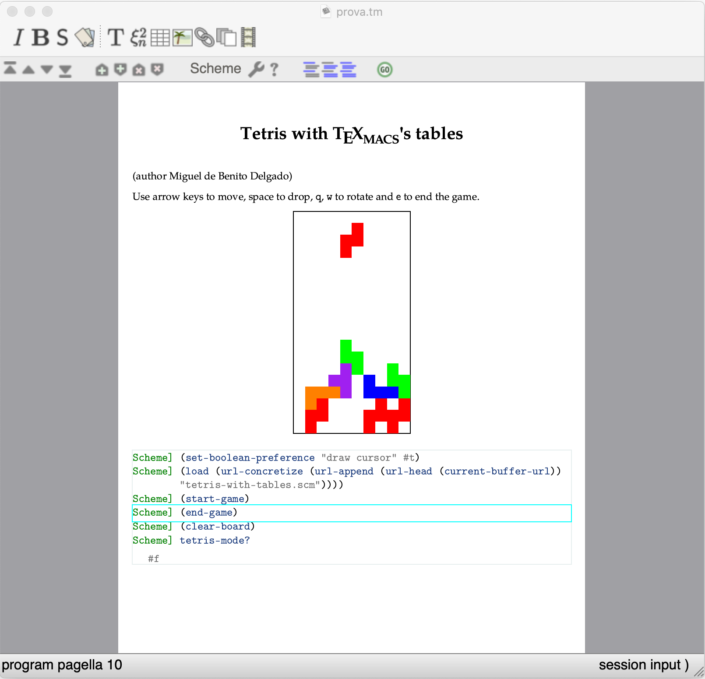

[main]Notes on TeXmacs
[main]Notes on TeXmacs
[main]Notes on TeXmacs

This example is taken from a presentation of Miguel de Benito
The TeXmacs source tetris-with-tables.tm loads the scheme file tetris-with-tables.scm which defines the procedures needed to play tetris. The game surface is implemented via a document table and the tiles by changing the color of the cells. This is not the most efficient implementation but it is a nice example of several features of TeXmacs:
handle keyboard interaction in a context-dependent way
programmatically modify a document
schedule actions to a later moment
Enjoy!
mgubi